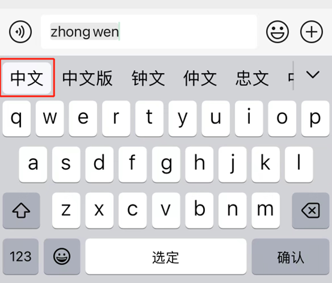
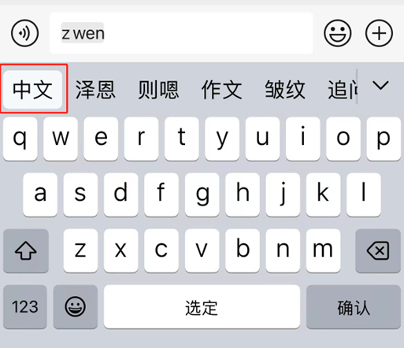

Full Pinyin(全拼) input method is a Chinese character input method based on the Romanization of the pinyin system, using the Latin alphabet to represent the pronunciation of Mandarin.
In the past, Chinese input methods mainly used stroke, five strokes and other ways to input, but these methods are slow input speed, difficult to master and other problems, difficult to be widely used.
With the development of computer technology, Chinese Pinyin input method is gradually introduced. Full Pinyin input method is one of the pinyin input methods, which maps the pinyin of each Chinese character completely to the keyboard, and forms words and sentences by continuously inputting the pinyin of Chinese characters. Compared with other pinyin input methods, the word production efficiency of Full Pinyin is more natural input.
Full Pinyin input method gradually gained popularity in the 1990s. Especially with the popularization of computers and the increase of people's demand for convenience, Full Pinyin input method has been widely used and become one of the mainstream of modern Chinese input method. At present, most Chinese input methods support Full Pinyin input method, and there are many changes and improvements on the basis of Full Pinyin input method. This method is widely used in mainland China and is the standard for Chinese character input. It is also used in other Mandarin-speaking areas such as Taiwan and Singapore.
Full Pinyin input method uses common computer or mobile phone keyboard, including number keyboard, letter keyboard and function keys, generally QWERTY keyboard. To use Full Pinyin input method, users need to enter the full pinyin of each Chinese character on the keyboard, and then follow the prompts to select the correct word or candidate.
Take the mobile phone keyboard as an example. To type "中文"（Pinyin: zhongwen）, we need to type "ZHONGWEN" in keyborad.
But some input methods have memory function. Therefore, in general, when we type "中文" once with the full spelling, we can type "中文" again without typing the full spelling.
The advantages of Full Pinyin input method are as follows:
In general, Full Pinyin input method has significant advantages in input speed, input accuracy, diversity of language expression and other aspects. It is an efficient, convenient and popular Chinese input method compared with other input methods.